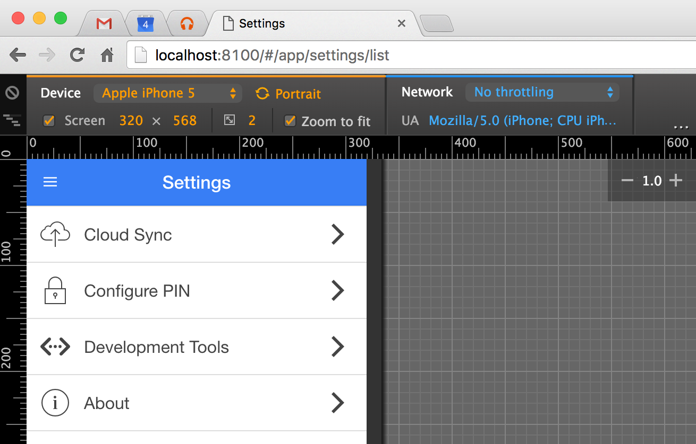
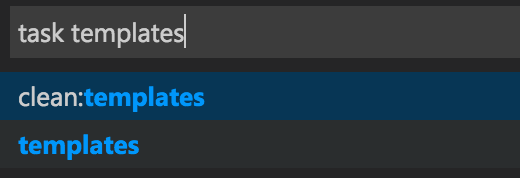
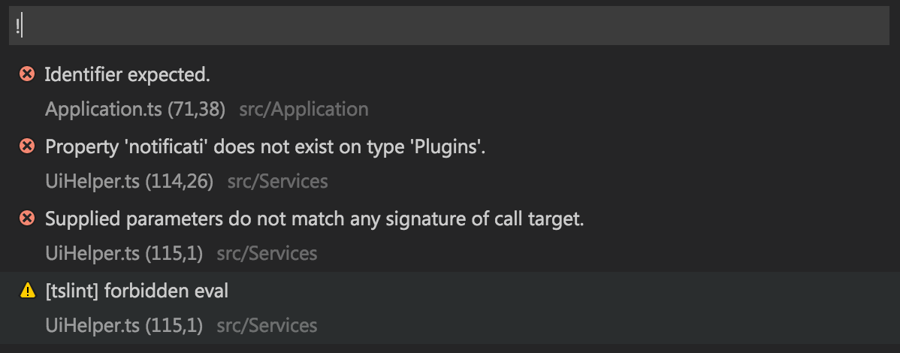

Overview
This section contains a list of tips and suggestions I've found useful when building mobile apps with this sample project.
Developing with Chrome
Chrome offers excellent support for debugging TypeScript and working with mobile applications. The developer tools provide user agent string spoofing, view port emulation, network speed throttling, and more.
Ionic offers the ionic serve command, which starts a lightweight HTTP server and serves your application.
With these two features combined, you can rapidly build out your application without lengthy native compilation or emulator startup times.

Security Flags
When making HTTP requests to your backend API during development, you may find it useful to disable several security features, such as the same origin policy and SSL certificate checking. To do so, you can start Chrome using the following flags:
# OS X
$ open -a "Google Chrome.app" --ignore-certificate-errors --disable-web-security
# Windows
> chrome.exe --ignore-certificate-errors --disable-web-security
Since these flags disable important security features, it is important that you do not use this Chrome instance for normal web browsing. If you use Chrome as your primary browser, I recommend launching a second instance pointed at a development-only profile:
# OS X
$ open -a "Google Chrome.app" --ignore-certificate-errors --disable-web-security --user-data-dir=/tmp/ChromeDev
# Windows
> chrome.exe --ignore-certificate-errors --disable-web-security --user-data-dir=C:\tmp\ChromeDev
I went a step further and created an AppleScript that allows me to interactively start a new Chrome instance based on a series of dialog prompts to enable optional features like proxies. You can read more here, or look at the script directly here.
Mock Platform APIs
When running your application in Chrome, you will be unable to call Cordova plugins that do not provide a browser platform implementation.
In this case, you'll need to mock up the plugin's API interface via src/Framework/MockPlatformApis.ts.
The pattern I follow is to have all plugin access go through the Plugins service. This service exposes a property for each plugin. The property accessor should check to see if the plugin is available, and if it isn't, delegate to a mock implementation.
Your mock implementation can simply be a no-op, or you can write a simple polyfill to provide basic funtionality for testing.
You'll see that the sample project uses the Cordova notification plugin to display native alert and confirm dialogs while running on devices. While running in a browser, however, a mock implementation is provided that delegates to Ionic's $ionicPopup service.
Mock HTTP APIs
During development, you may find it useful to mock up the responses for HTTP requests. This can be useful to test edge cases in your application, or even to build an application against APIs that aren't yet live.
You can mock up HTTP responses in src/Framework/MockHttpApis.ts. First, you specify the regular expression to match against a request URL, and then you provide a method that returns the data for that request.
When mock HTTP API mode is enabled (via the in-app developer tools), these requests will not go over the wire, and will instead return your mocked-up data. There is a randomized delay of between one to three seconds so you can simulate the latency of a request on a cellular network.
Running Natively
To run your application on the iOS Simulator or Android emulator, you can use the ionic emulate ios or ionic emulate android commands, respectively.
Likewise, to run on an attached device, you can use the ionic run ios --device or ionic run android --device commands.
It is important to remember that part of what Cordova does for you is generate the native projects in the platforms directory. These native projects can be opened in XCode and Android Studio. This is useful for debugging native code plugins. To update the generated projects, you can run ionic prepare ios or ionic prepare android.
Running iOS Simulator Remotely
If you are developing your application on a Windows or Linux machine, but want to test and run your application on iOS, you can do so using the gulp emulate-ios-remote task to target a remote OS X machine.
First, you'll need to install the remotebuild package via npm on the OS X machine you want to use to build the project and run the simulator. Note that since the Cordova project will be built on the OS X machine, you must make sure you have all the build prerequisites installed as well (XCode, etc.).
$ npm install -g remotebuild
$ remotebuild start
Next, you'll edit resources/build/remote.yml, located in the root of the starter project. This file will let you set the host name, port, and URL to point at your OS X machine, as well as configure other settings.
Finally, execute gulp emulate-ios-remote from the root of the starter project. This will take care of compiling TypeScript, building a payload, and uploading it to the OS X machine so it can be built.
Visual Studio Code
Shortcuts
If you are using VS Code, you can use ⌘ Command⇧ ShiftB to build the application. This will execute the gulp ts task.
Additionally, you can use ⌘ Command⇧ ShiftR, then begin typing the name of a gulp task to run.

Tasks
The .vscode/tasks.json file contains configuration for the tasks you can launch, as well as definition for the problem matchers. A problem matcher allows you to define a regular expression that matches console output from a task, then use that information to display warnings or errors in VS Code's warning or error views.

Build Schemes
A common requirement during development is the ability to create different builds of your application. For example, you may have a development build to be used by developers while writing code, a staging environment for QA staff to use to test changes, and a production environment for live users.
In each of these schemes, you may need to point at different API URLs, or use different Google Analytics accounts, for example.
This starter project offers a gulp task and configuration templates to make it easy to switch between environments.
Configuration Task
The gulp config task is responsible for configuring the application for the default scheme. If a scheme name is provided via the scheme argument, that scheme's configuration will be used instead.
For example, to use a scheme named "staging":
gulp config --scheme staging
Scheme Definitions
Build schemes are defined in the resources/config/schemes.yml file:
default: "development"
schemes:
development:
debug: true
replacements:
API_URL: "http://development.your-company.com/api"
API_VERSION: "v2"
staging:
debug: true
replacements:
API_URL: "http://staging.your-company.com/api"
API_VERSION: "v1"
production:
debug: false
replacements:
API_URL: "http://www.your-company.com/api"
API_VERSION: "v1"
The default property indicates the name of the scheme to use if one isn't provided when executing gulp config (or using the VS Code shortcut).
Each scheme has a debug attribute which sets the value of an debug flag that is available at application runtime. This flag can be checked to perform different behavior based on the flag's value (e.g., Utilities.isDebugMode).
Additionally, each scheme has replacement values. The name of a replacement item is used to replace any occurrence of that name with the given value. Replacements will occur in the files listed in the generated files section.
For example, assuming the "staging" example scheme above, running gulp config --scheme staging would replace the following configuration chunk from resources/cordova/config.master.xml:
<preference name="apiUrl" value="${API_URL}"/>
<preference name="apiVersion" value="${API_VERSION}"/>
with the following output to config.xml:
<preference name="apiUrl" value="http://development.your-company.com/api"/>
<preference name="apiVersion" value="v1"/>
Base Schemes
Some of your build schemes may have nearly identical configurations, save for a single value or two. For these cases you can create a base scheme that contains the common values, and a specific scheme that uses the base scheme.
For example, perhaps you have two schemes that both point at production, but one is for pre-release testing, in which you don't want analytics tracking enabled:
schemes:
_common:
API_URL: "http://www.your-company.com/api"
API_VERSION: "v1"
prerelease:
debug: true
base: "_common"
GOOGLE_ANALYTICS_ID: "1234567890" # Testing GA Account
release:
debug: false
base: "_common"
GOOGLE_ANALYTICS_ID: "0987654321" # Production GA Account
Use of either the prelease or release scheme in this example would perform replacements using the same API_URL and API_VERSION values, but different GOOGLE_ANALYTICS_ID values.
Platforms
The configuration task can configure the project for three different platform types:
- iOS/Android via Cordova (default)
- Chrome Extension
- Mobile Website
By default the config task will assume the Cordova platform. However, the --prep flag can be used to specify two additional platforms: Chrome Extension or Mobile Website.
Chrome Extension: gulp config --scheme production --prep chrome
Mobile Website: gulp config --scheme production --prep web
This flag adjusts which master files from the resources directory are used to generate the configuration files in the next section.
Generated Files
This gulp config creates the following files:
- Cordova configuration:
config.xml(fromresources/cordova/config.master.xml) - Chrome extension manifest:
build/chrome/manifest.json(fromresources/chrome/manifest.master.json) - Starting page:
www/index.html(fromresources/<platform>/index.master.html) - Runtime variables:
src/js/build-vars.js(fromresources/config/config.yml)
These files will be generated from their master files, and variable substitution will be performed based on the scheme definitions. This allows for easy configuration of builds for different environments (e.g., development, staging, production).
The build-vars.js file will contain information about the build, such as application name, version number, debug flag, and build timestamp. In addition, all of the key/value pairs resources/config/config.yml will be present in a properties collection. All of these values are available via the Configuration service.
Example usage for Cordova: gulp config --scheme production
By default this task will assume Cordova, however the --prep flag can be used to specify a different platform as shown below.
Example usage for Chrome Extension: gulp config --scheme production --prep chrome
Example usage for Mobile Website: gulp config --scheme production --prep web
FAQs
Where is
config.xmlfor Cordova?
This file is generated from resources/cordova/config.master.xml when running the gulp config task. This allows you to substitute different values in the file based on a build scheme. See Build Schemes for more details.
Why are Cordova plugins and platforms defined in
package.jsonand notconfig.xml? Why not useionic state restore?
When I first started this project the ionic state command did not exist. I noticed that when adding a plugin via ionic plugin add the plugin name/version pair was added to package.json under the cordovaPlugins key. I needed a way to easily restore platforms and plugins so I wrote the gulp init task and use that instead.
Since gulp init also acts as a hook for customizing the initialization process, I will probably continue using it instead of Ionic's built-in command.
Why are all your npm packages defined in
dependenciesand notdevDependencies?
This starter project isn't a traditional node package; it is not designed to be published to npm or used as a dependency in another project.
The dependencies specified in package.json are all build-time dependencies. This includes Cordova, Ionic, gulp, and all of the other tools used to build the project.
The only two packages defined as devDependencies are gulp-typedoc and typedoc which can be used to optionally generate type documentation and are not used by the build process.
Why are
platformsandpluginsin the.gitignore? Shouldn't I commit those?
If you want to commit these directories you can, but I choose not to.
I tend to think of Cordova as a tool similar to GYP, that is, a project generator. I've found that committing these directories (particularly the platforms directory) adds development overhead as you have to keep track of what you're committing there and potentially reconciling diffs after each cordova prepare command (or whenever you upgrade your Cordova or platform version).
So the upside is that you have less files to manage and keep track of and potentially reconcile as Cordova and the platform specific IDEs change.
A potential downside is that if you need to do something platform specific that isn't in a plugin or something that Cordova does not support, you'll need to write a build hook so it can be applied every time you re-initialize your platforms directory.